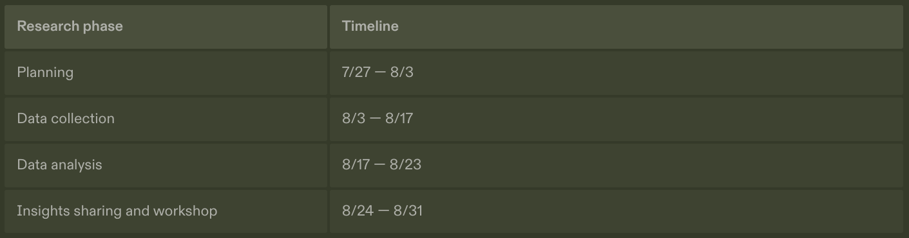

Brave Leo is a smart AI assistant built right into your browser. Ask questions, summarize pages, create new content, and more. Privately. Learn more
Role: UX Research
Stage: End-to-end
Tags: #generative AI #exploratory #early-stage #mixed-methods #roadmap #stakeholdermanagement #businessgoals
In retrospective, witnessing the generative AI industry's progress in refining their products and services based on insights similar to those uncovered during this research reinforces confidence in the quality and relevance of the work.
In 2023, as generative AI took the tect industry by storm, the board and the executive team decided to jump on the opportunity to integrate this emerging technology to make our product competitive and for the long-term development.
Time! The board and the executive team want to release the features soon to gain market awareness and stand out among competitors. We had 3-4 months to ship and early version of Brave Leo AI.
With the constraints in mind, the team decided to build an early version of Leo that provides the most wide use cases while simultaneously exploring heavy-lifting tasks. After MVP, we will continue with more backend building incorporating users, system, and the evolution of the technology itself.
As we moved on to develop Brave Leo AI, I also developed and maintained a research roadmap based on
To navigate the ambiguity in the early version, I met with the key stakeholders - product, design, ML engineers, and later on marketing, to understand their thoughts, concerns, and assumptions. I also conducted competitor analysis and secondary study to gain a deeper understanding of this space. All of the above helped framing the objectives of the research.
The preliminary studies helped us define recruiting criteria and informed the scope of the preliminary research.
Survey data by research firm McKinsey & Company
To gain contextual understanding and information on user segmentation, I conducted a secondary study that revealed key information on industry adoption, unaddressed risks, primary user motivations, and the potential areas of application for generative AI.
To understand the landscape of existing solutions, the product manager and I also looked into similar services with AI technology to draw ideas and uncover gaps in the solutions the competitors offered.
The recruiting screener was released on identified platforms including LinkedIn and to a group of randomly selected Brave users for a diverse outreach.
Recruiting criteria (sample size n=600)
*The study aimed to study the people who fit into the Brave personas to prioritize the value for Brave users and potential Brave users given the overall product is the Brave browser.
Based on the findings of phase 1 survey design research, the PM and I preliminarily segmented the target participants into 2 segments based on the key user tasks, which informed the sample size for the interview.
Recruiting criteria (sample size n=600)
Conducted remotely, participants were asked to review and sign the User Research Non-Disclosure Agreement . Data handling details and screen-sharing expectation were shared with the participants prior to scheduling the session.
Data analysis
Friedman Test - The survey employed 7-point Likert Scale questions to measure user perceived importance of the potential functionalities. I then used the Friedman Test to understand whether there is statistically significant difference in the perceived functionalities.
Descriptive statistics and cross-tabulation - uncovered trends and segmented users
Data visualization - provided clarity, accessibility, and a visually intuitive way to explore and communicate survey insights
Data analysis
Thematic analysis - identified recurring themes across interviews and observations and used the Affinity Mapping framework to cluster related ideas
Coding - used Dovetail to label data with descriptive codes that represent core ideas
Data synthesis - synthesized key findings with supporting evidence, mapped themes to actionable insights ensuring alignment with research objectives
I scheduled a meeting with all the key stakeholders for a detailed insight review where they could better digest and discuss them. This version of key insights tells the story and includes multi-media data.
Upon presenting the research insights, I also hosted design focused and engineering focused brainstorming workshops for stakeholders to share their ideas on the solutions and get the conversations going.
Together, we identified the "low-hanging fruits" for the Leo's early version, prioritized for the development roadmap.
e.g. to improve Leo's personalization, the short term solution is to provide canned options of tones, length, and actions for users to choose from; the long term solution is to figure out how we can make the model learn and understand unique user's writing style.
A few examples how research insights informed Leo's early version.
[Suggested Questions] is designed to help users get started by introducing them to the capabilities of the AI assistant and educating them on how it can be used effectively.
The pre-definable script is a quick and effective short-term solution to enhance user communication preferences and streamline their interactions with the system.
Leo, the AI assistant, MVP is designed for 2 main user tasks aiming to boost productivity and generate creative ideas
After Leo landed in Nightly (a beta version of the browser), I also conducted a quick round of usability testing on key user tasks, quick improvements were made based on the findings to increase legibility and usability.
After Leo was shipped, I also worked with the product manager to define and set up private analytics to track and measure performance.
If given more time, I would have done more in-depth exploration based on occupation, I was informed by the secondary study, would this tool be more valuable to certain occupations than the rest? I feel like the product strategy would’ve been different. But given the time constraint, I believe this was the best approach.
This research project took roughly 6-7 weeks
